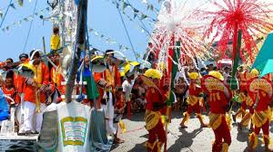
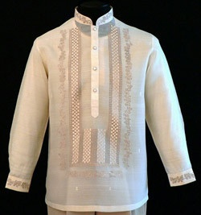
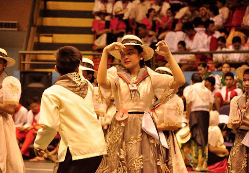
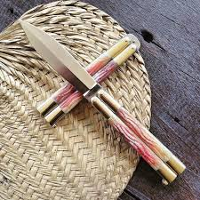
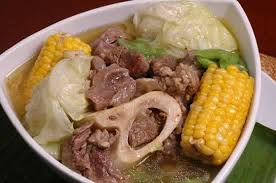
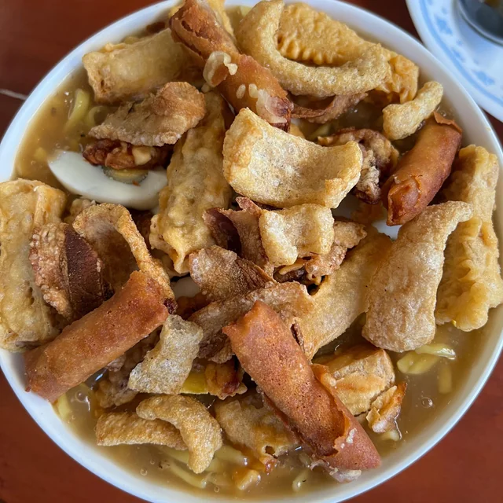

Culture of Batangas
Experience the vibrant and rich culture of Batangas, where tradition and heritage come alive through colorful fiestas, traditional attire, and folk dances.
Batangas Fiesta
The Batangas fiesta is a lively celebration filled with colorful parades, music, and communal feasts, showcasing the province's strong sense of community and devotion.
Barong Tagalog
The Barong Tagalog, an elegant, embroidered garment often made of piña or jusi fabric, is the traditional formal wear for men in Batangas, symbolizing Filipino identity and craftsmanship.
Subli Dance
The Subli dance, a traditional folk dance, combines graceful movements and rhythmic beats, performed to honor the Holy Cross during the town’s fiestas, reflecting the deep-rooted faith and artistic expression of the Batangueños.
Kapeng Barako

Kapeng Barako is a unique coffee variety grown in Batangas, known for its strong and bold flavor, and is a staple in every Batangueño household.
Balisong (Butterfly Knife)
The Balisong, or butterfly knife, is a traditional weapon and tool from Batangas, known for its craftsmanship and the skill required to use it. It represents the ingenuity and artistry of the local craftsmen.
Bulalo
Bulalo is a hearty beef marrow soup that is a favorite among locals and visitors alike. It is traditionally prepared with slow-cooked beef shanks and bone marrow, creating a rich and flavorful broth.
Lomi
Lomi is a popular noodle dish in Batangas, known for its thick, flavorful broth and hearty ingredients. It is a comfort food that reflects the warmth and hospitality of the Batangueños.